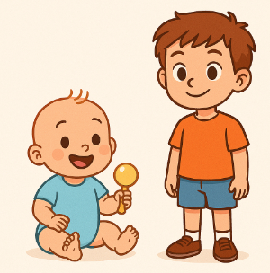

Traducció: L’aniversari
Tradueix aquestes frases del català a l'anglès. Escriu la teva resposta, clica Comprova o prem la tecla Retorn i escolta la frase correcta.

Nota lingüística:
- everyone / everybody : semblen parlar de molta gent, però gramaticalment són singulars.
Han d'anar amb «was», no «were». Funcionen com "tothom".
Una pista que et pot ser útil és recordar que acaben en "one" i "body", que són paraules singulars.`
- take photos / take pictures: "Take photos" és correcte, però “take pictures” és més comú en anglès del dia a dia.